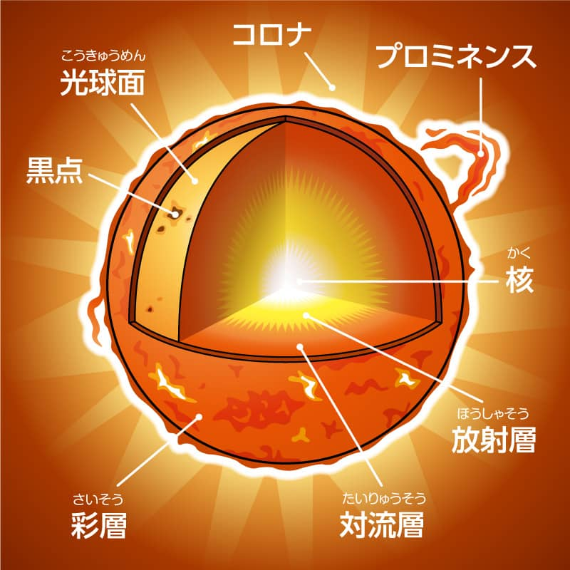
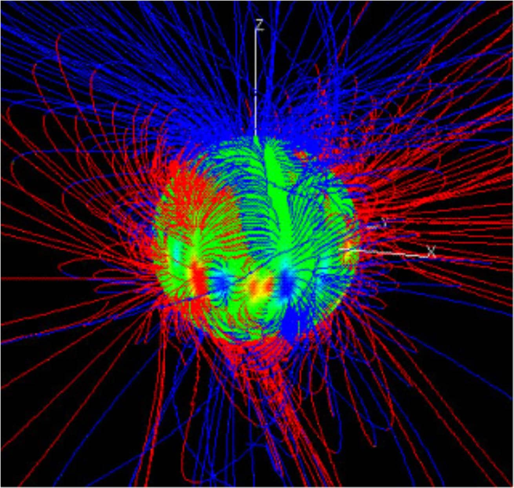
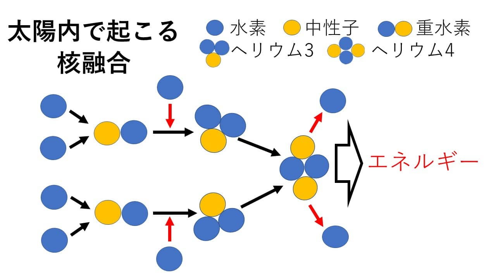
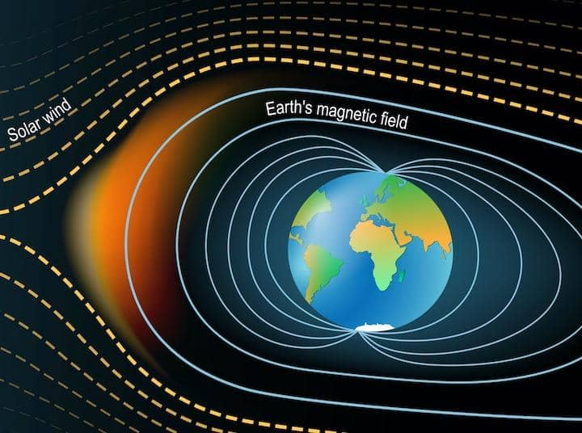

(2024/03/13)
太陽の概要
太陽系主星です。
太陽系で唯一生命体が存在する惑星です。
直径が1,392,000kmで地球の109倍です。
27日で自転しています。
地球との距離は1億4960万kmあります。太陽と地球との距離を1天文単位といいます。
太陽の構造
基本構造

中心から核、放射層、対流層、光球で構成されています。
太陽の表層面である光球は6000°℃ですが、光球の外側にあるコロナやプロミネンスでは、
100万℃から200万℃にもなります。
磁力線

太陽にも地球のように磁力線があります。しかし、地球のように1本線ではありません。
対流層で発生した磁力線の束が、反発しあい捻れて、太陽の中で温度が低い黒点から出てきます。
その結果左の図のように複雑な構造になっています。
(※磁力線の表れが黒点なので、基本的に2つセットで現れます。)
磁力線が複雑になるほど太陽のエネルギーが強いということになります。なので黒点の数を調べることで、
太陽の活発度を知ることができます。太陽は11年周期で黒点の数が増減しています。
太陽のエネルギー
太陽は核融合によってエネルギーが作られています。どのようにして核融合が行われるのでしょうか。
まず核融合とは、核分裂の反対の現象ですので、軽い物質から重い物質を作り出す現象です。
その時に多くのエネルギーを放出します。

左の図のように水素原子同士がぶつかり重水素ができ更に水素が衝突すると、ヘリウム3ができます。
ヘリウム3同士が衝突するとヘリウム4と水素2つそしてエネルギーが発生します。
最後に出てきた水素同士で核融合を行います。
こうして発生したエネルギーが光となって地球に到達します。
中心核で発生したエネルギーは他の粒子とぶつかりながら移動するため、
太陽の表層面まで到達するのに100万年以上かかります。そこから地球までは8分19秒で到達します。
なので、今見えている太陽は8分19秒前の姿です。
もし、太陽が今爆発したとしても情報の伝達速度が光の速さを超えることはないので、8分19秒間は何の影響も得ません。
太陽からの放射線

太陽からは非常に多くのプラズマや放射線が出ています。これを太陽風と呼びます。勿論地球に直接降り注いだら、
生物は生存できません。しかし地球には、強力な地磁気で守られています。
形状は左の図のような南極と北極を結ぶ形になっています。磁石と同じ形です。
この図を見ると北極と南極は地磁気が薄くなっています。この場所にはプラズマが流れ込みます。
それが酸素原子や窒素原子と衝突して発光現象が起こります。これらオーロラです。
宇宙豆知識(太陽がインフラを壊す！)
先ほど、太陽からは太陽風が出ていると説明しました。この太陽風が非常に強くなることがあります。
太陽フレアと呼ばれます。太陽フレアは数分から数時間の長さで発生して、
多くの電波や紫外線、ガンマ線が放出されます。非常に強いエネルギーにより、
地磁気を乗り越えて日本でもオーロラが観測できるようになります。
多くの電磁波が流れ込むので人工衛星などの精密機器が被害を受けます。
他にも、発電所の安全装置が誤作動して大規模停電が起こります。
大きな規模のフレアが最後に発生したのは2003年11月4日です。
太陽フレア自体は小さいもので一日3回程度、影響が出るものが数年に1回程度発生しています。
いつ発生するかを予測するために、宇宙天気予報というものがあります。